From Potential to Command
Prepared to Lead.Ready to Command.
من الإمكانات إلى القيادة
SAMT identifies exceptional talent and prepares selected individuals for future command, strategic leadership and greater institutional responsibility.
SAMT is designed for exceptional professionals who demonstrate the character, intellect, judgement, discipline and ambition required to assume future command and senior leadership responsibilities.
Entry is earned. Development is demanding. Readiness is evidenced.
The leadership journey
A disciplined path from potential to command.
Every stage raises the standard of judgement, character, exposure and responsibility.
Potential
Exceptional potential is identified.
Selection
A rigorous and selective admission process.
Formation
Core capability and leadership judgement are developed.
Exposure
National and international environments broaden perspective.
Transformation
Leadership readiness is measured and strengthened.
Command Readiness
Prepared to lead. Ready to command.
Selecting the elite of the elite
A leadership privilege.
Not a training seat.
SAMT selects high-potential professionals through evidence, assessment and independent judgement.
Eligibility
Minimum experience and documented performance.
Assessment Centre
Analysis, collaboration and decision under pressure.
Executive Interview
Motivation, humility, judgement and leadership potential.
Independent Endorsement
Final decision by a multidisciplinary panel.
Preparation stations
Global exposure.
Strategic perspective.
Participants engage with leading institutions, sectors and operating environments that shape global leadership.

Current station
United Arab Emirates
National foundation, sovereign capability and transformation
A three-week national foundation station connecting leadership formation with the UAE defence, aviation, advanced-technology and sustainability ecosystems.
- Duration
- 3 weeks
- Primary focus
- National capability & transformation
- Tawazun and national capability governance
- EDGE and GAL defence and aviation ecosystems
- TII, Masdar, emerging technology and sustainability
Leadership maturity competencies
Built for command.
Trusted to decide.
Strategic Judgement
Read context, consequence and long-term institutional direction.
Systems Thinking
Understand interdependence across people, capability and mission.
Decision-Making Under Complexity
Balance mission, risk, time and incomplete information.
Institutional Leadership
Align strategy, people and governance toward sustained impact.
Innovation & Transformation
Convert emerging possibilities into executable institutional change.
International Engagement
Build trust, perspective and strategic partnerships across cultures.
Assessment and governance
No progression without evidence.
No execution without governance.
Development is measured continuously and governed through clear authority, independent evidence and disciplined decision points.
- 01BaselinePre-programme capability profile
- 02Daily EvidenceTasks, conduct and reflection
- 03Host AssessmentIndependent observations
- 04Maturity ChallengeDecision and executive briefing
- 05Impact ProjectInstitutional result and follow-through
Institutional impact
Stronger leadership.
Stronger institutions.
SAMT is measured by what changes after participants return: better judgement, stronger networks, executable transformation and sustained institutional value.
Measurable leadership growth
Evidence across six command-oriented competencies.
Strategic networks
National and international relationships built with purpose.
Transformation assignments
Priority challenges converted into owned delivery plans.
Sustained institutional value
Follow-up and impact measurement over twelve months.
Admission
Selected for potential.
Shaped for command.
Participation is by institutional nomination and a rigorous selection process. Admission is not open enrolment.
Return to the beginning